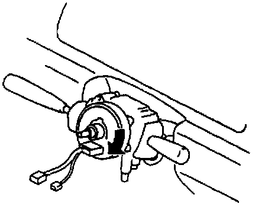
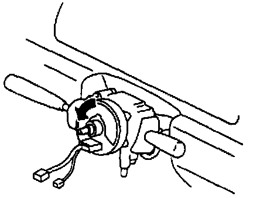
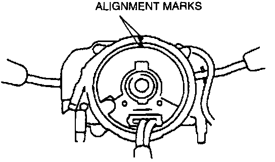

Clockspring Assembly / Spiral Cable: Adjustments
1. Set the front wheels straight ahead.CAUTION: The clock spring will break if over-wound. Do not forcibly turn the clock spring when turning it.

2. Turn the clock spring clockwise until it stops.

3. Turn the clock spring counterclockwise 2.75 turns.

4. Align the mark on the clock spring with the mark on the outer housing.